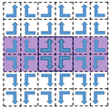
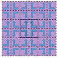
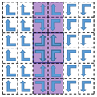
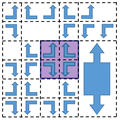
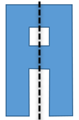
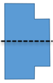
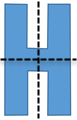
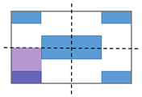
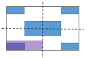

Clips and Gauges Editor
To access, use one of the following:
Activate a session in the Session Browser pane, click the Gauges tab, and click the Clips button in the Gauge Analysis pane.
Right-click a session in the Run Control/Layout Session View table and select Custom Clips/Gauges.
During session setup, the Clips and Gauges Editor lets you create and manage clips and gauges.
Description
The Clips and Gauges Editor lets you customize the clips and gauges from the Layout/Gauge Pair step.
Objects
Button |
Description |
|---|---|
View Options |
Controls the following viewer options:
|
Reset Zoom |
Resets the viewer to original magnification level. |
Ruler Options |
Controls the following ruler options:
|
Edit: Gauge/Clip
|
Toggles the viewer mode between editing gauges and clips. |
Add Gauge/Clip
|
Adds a gauge or clip, depending on the Edit mode selection. |
Apply |
Applies all changes made in the Clips and Gauges Editor to the session. Otherwise, no changes are applied. |


Object |
Description |
|---|---|
CID |
Clip ID number |
S |
SMO Enabled Indicates clip enabled for SMO stage. By default, a new session uses gauges selected in the Gauge Analysis Pane for SMO. If you customize clips using the Clips and Gauges Editor, SMO ignores SMO Enable settings and applies the customized clips settings. |
O |
OPC Enabled Indicates clips enabled for OPC and Verify stages. |
Object |
Description |
|---|---|
Weight |
Applies weight value to clip during optimization. By default, the SMO and OPC/Verify stages apply gauge weights during optimization. If the clip weight is not specified in clip weight mode and the clip has two gauges, then the weight of the first gauge is applied as the clip weight in the SMO stage. Changing to a numerical value changes the optimization to use clip weights. |
Periodicity |
Defines if the clip is periodic in X, Y, or both, or not periodic (N). See Table 4. |
Symmetry |
Defines the clip to have one of the symmetries described in Table 5. The symmetries can be thought of as being in two groups:
|
Width (nm) Height (nm) |
Displays height and width of the clip. |
Gauges |
Displays gauge IDs (GIDs) for gauges in the clip. |
SMO |
Enables the clip for the SMO stage. |
OPC |
Enables the clip for the OPC and Verify stages. |
Detect Period/Symm |
Performs periodicity and symmetry detection, and updates values of Periodicity, Symmetry, Width, and Height. Click the button to adjust the detection search range. |
periodicity X |
periodicity XY |
periodicity Y |
periodicity N |
 |
 |
 |
 |
F: No Symmetry |
| : Y mirror |
_ : X mirror |
+ : mirror in X and Y |
 |
 |
 |
|
ST : Staggered tall |
SL : Staggered long |
||
 |
 |
||
Usage Notes
To combine gauges from different clips into one clip, set Edit to Gauge. Select the gauge in the Gauges Table. Right-click the highlighted gauge in the viewer and select Change Clip. Select the clip ID.
To save any changes made in the Clips and Gauges Editor, you must click Apply before closing the editor.